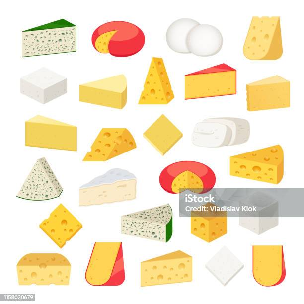

<ion-card>
  <ion-card-header>
    
  </ion-card-header>
  <ion-card-content>

        <ion-card-title [routerLink]="['/cheese', cheese._id]" color="secundary">{{ cheese.name }}</ion-card-title> 
        <div>
          {{ cheese.milkQuantity }} litres<app-ico-milk-type
            [tipus]="cheese.milkType"
          ></app-ico-milk-type>
        </div>
  
    <div>
      <div>Data: {{ cheese.date | date }}</div>
      <app-ico-cheese-status [status]="cheese.status"></app-ico-cheese-status>
    </div>
  </ion-card-content>
</ion-card>
